First dataset, first dead end - and why we ended up scraping full match histories
Author
Miguel R.
Published
July 12, 2026
This was the starting point of the project: a dataset of Elo rating snapshots for the 48 qualified teams, taken at regular intervals leading up to the tournament. The question of this notebook is simple: is this dataset enough to predict matches?
Spoiler from the conclusion: no, but the reasons why shaped the whole design of the predictor.
1. Loading the snapshots
Code
import pandas as pdimport pytestfrom IPython.display import displayfrom colors import*elo_df = pd.read_csv("./data/elo_ratings_wc2026.csv")final_date = pd.to_datetime('2026-07-19')# convert the column 'snapshot_date' to datetime'elo_df["snapshot_date"] = pd.to_datetime(elo_df["snapshot_date"])elo_df = elo_df[elo_df["snapshot_date"] <= final_date]print(elo_df.info())print(elo_df.describe())teams = elo_df["country"].unique()teams
The 2026 World Cup is the first with 48 teams, split into twelve groups of four. We split the snapshots per group to see how competitive each group is on paper.
Ratings from too far back describe teams that no longer exist in any meaningful sense: squads turn over almost completely between World Cup cycles. A reasonable window is about two cycles. The first match of the 2018 World Cup (Russia vs Saudi Arabia, June 14, 2018, Luzhniki Stadium) makes a convenient cutoff.
The plot below counts how many snapshots each team has since then.
Code
import mathwrc_2016_first_match_dt = pd.to_datetime("2018-06-14")wrc_2008_first_match_dt = pd.to_datetime("2008-12-11")import seaborn as snsimport matplotlib.pyplot as pltdef plot_matches_per_country(df: pd.DataFrame): count_plot = sns.countplot(x="country", data=df, palette="Set1", order=df["country"].value_counts().index, hue="country") mean_matches = df.groupby("country").agg({"country": "count"}).mean() count_plot.set_title(f"Number of matches per country since {df['snapshot_date'].min().year}") count_plot.set_ylabel(f"Number of matches, avg:{math.floor(mean_matches['country'])} matches per country") count_plot.set_xlabel("") plt.xticks(rotation=90, fontsize=8) plt.show()plot_matches_per_country(elo_df)plot_matches_per_country(elo_df[elo_df["snapshot_date"] >= wrc_2016_first_match_dt])plot_matches_per_country(elo_df[elo_df["snapshot_date"] >= wrc_2008_first_match_dt])
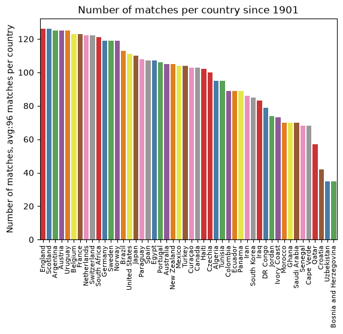
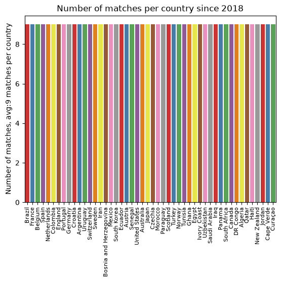
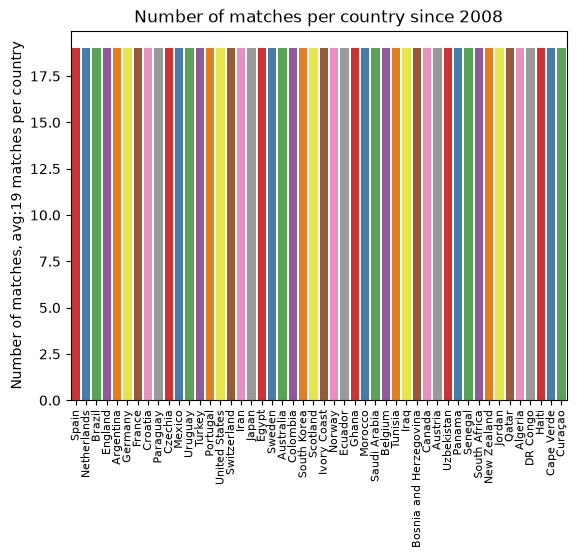
4. The data density problem
Within that window the snapshots are sparse: roughly ten data points per team every eight years. That is nowhere near enough to fit a per-team model on its own, which already hints that we will need the full match-by-match history rather than periodic snapshots. Still, the per-group trajectories are a useful map of the landscape.
Code
def plot_elo_per_group(df: pd.DataFrame, title: str="Elo Rating per Group"): avg_elo = df.groupby("country").agg({"rating": "mean"}).mean() three_best_elo = df.sort_values(by="rating", ascending=False).head(3).groupby("country").agg({"rating": "mean"}).mean() filtered = df[['country', 'snapshot_date', 'rating']] ax = sns.lineplot(filtered, x="snapshot_date", y="rating", hue="country", palette="Set1") ax.set_xlabel(f"avg elo:{math.floor(avg_elo['rating'])} - top 3 avg:{math.floor(three_best_elo['rating'])}") ax.set_ylabel('Elo Rating') ax.set_title(title)# ax.legend(loc='upper left') sns.move_legend(ax, "upper left", bbox_to_anchor=(1, 1)) plt.show()plot_elo_per_group(GROUP_A_all_stats[GROUP_A_all_stats["snapshot_date"] >= wrc_2016_first_match_dt],"Elo Rating Group A since 2016")plot_elo_per_group(GROUP_B_all_stats[GROUP_B_all_stats["snapshot_date"] >= wrc_2016_first_match_dt],"Elo Rating Group B since 2016" )plot_elo_per_group(GROUP_C_all_stats[GROUP_C_all_stats["snapshot_date"] >= wrc_2016_first_match_dt],"Elo Rating Group C since 2016")plot_elo_per_group(GROUP_D_all_stats[GROUP_D_all_stats["snapshot_date"] >= wrc_2016_first_match_dt],"Elo Rating Group D since 2016")plot_elo_per_group(GROUP_E_all_stats[GROUP_E_all_stats["snapshot_date"] >= wrc_2016_first_match_dt],"Elo Rating Group E since 2016")plot_elo_per_group(GROUP_F_all_stats[GROUP_F_all_stats["snapshot_date"] >= wrc_2016_first_match_dt],"Elo Rating Group F since 2016")plot_elo_per_group(GROUP_G_all_stats[GROUP_G_all_stats["snapshot_date"] >= wrc_2016_first_match_dt],"Elo Rating Group G since 2016")plot_elo_per_group(GROUP_H_all_stats[GROUP_H_all_stats["snapshot_date"] >= wrc_2016_first_match_dt],"Elo Rating Group H since 2016")plot_elo_per_group(GROUP_I_all_stats[GROUP_I_all_stats["snapshot_date"] >= wrc_2016_first_match_dt],"Elo Rating Group I since 2016")plot_elo_per_group(GROUP_J_all_stats[GROUP_J_all_stats["snapshot_date"] >= wrc_2016_first_match_dt],"Elo Rating Group J since 2016")plot_elo_per_group(GROUP_K_all_stats[GROUP_K_all_stats["snapshot_date"] >= wrc_2016_first_match_dt],"Elo Rating Group K since 2016")plot_elo_per_group(GROUP_L_all_stats[GROUP_L_all_stats["snapshot_date"] >= wrc_2016_first_match_dt],"Elo Rating Group L since 2016")
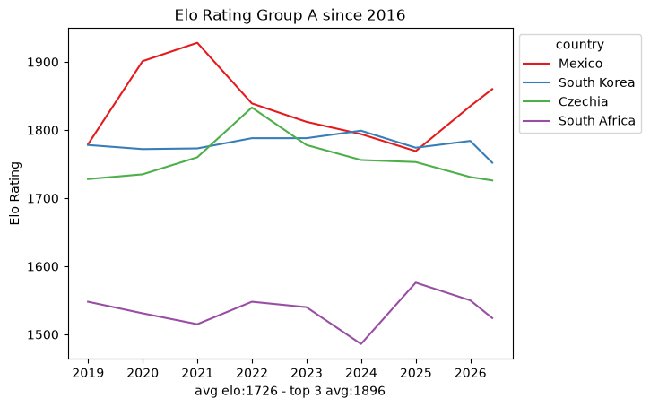
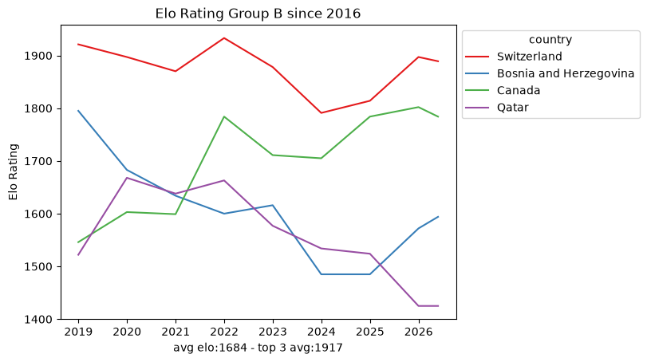
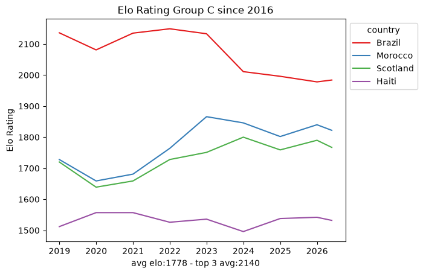
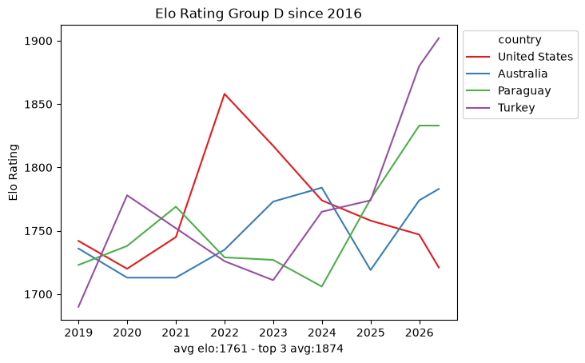
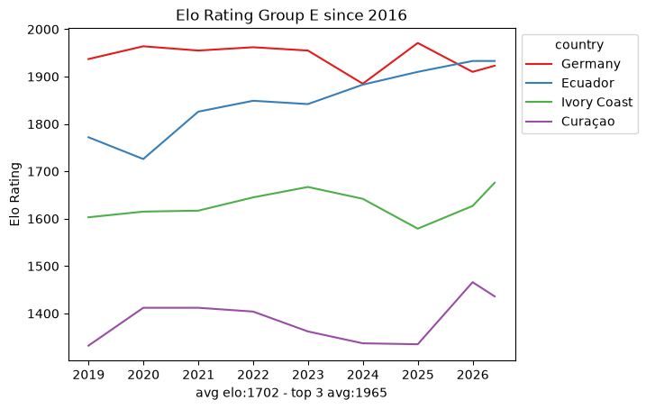
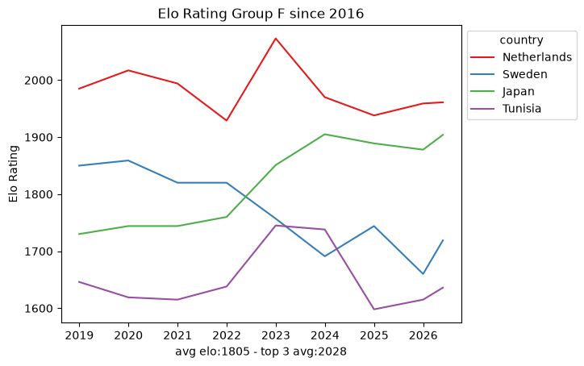
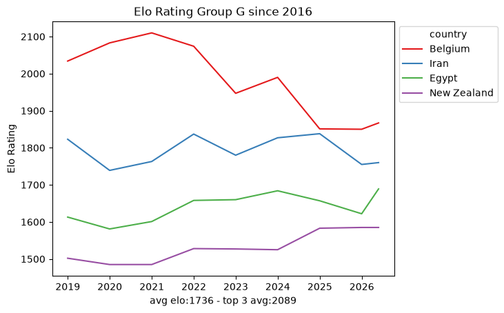
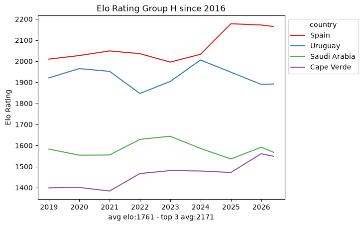
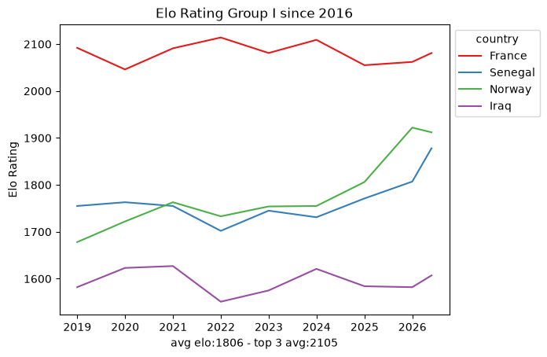
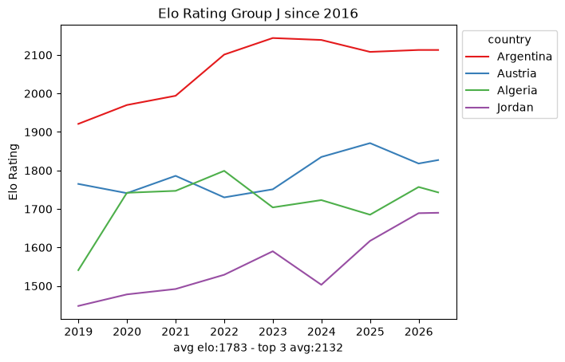
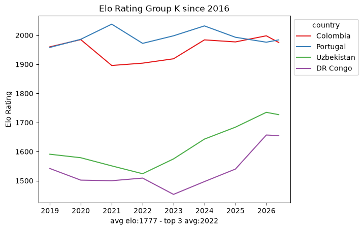
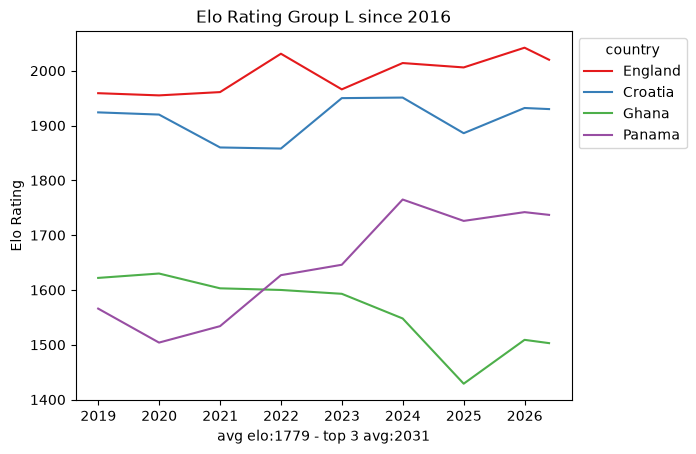
5. Conclusion: a map, not a model
This dataset, by itself, cannot predict one team against another:
Too sparse. A handful of snapshots per team is not training data.
No context. A rating summarizes strength but says nothing about how a team wins: goals scored, where the match was played, or against what kind of opponent.
No matchups. Two teams’ ratings say who is favored, never what the score looks like.
What it is good for is a map of the field: which groups are lopsided, which are tight, and who the favorites are. For the actual model we scraped the full match-by-match Elo history of every qualified team from eloratings.net - that exploration is in EDA: Match Histories.